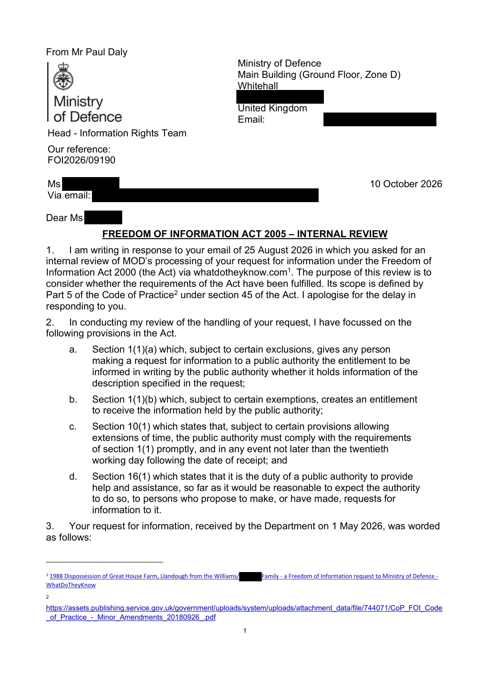

GHF-E106-R68-A1 WhatDoTheyKnow reply
Ministry of Defence internal review FOI2026/09190

Transcript
1 From Mr Paul Daly Ministry of Defence Main Building (Ground Floor, Zone D) Whitehall [address redacted] United Kingdom Email: [email redacted] Head - Information Rights Team Our reference: FOI2026/09190 Ms Requester Via email: [email redacted] 10 October 2026 Dear Ms Requester, FREEDOM OF INFORMATION ACT 2005 – INTERNAL REVIEW 1. I am writing in response to your email of 25 August 2026 in which you asked for an internal review of MOD’s processing of your request for information under the Freedom of Information Act 2000 (the Act) via whatdotheyknow.com1. The purpose of this review is to consider whether the requirements of the Act have been fulfilled. Its scope is defined by Part 5 of the Code of Practice2 under section 45 of the Act. I apologise for the delay in responding to you. 2. In conducting my review of the handling of your request, I have focussed on the following provisions in the Act. a. Section 1(1)(a) which, subject to certain exclusions, gives any person making a request for information to a public authority the entitlement to be informed in writing by the public authority whether it holds information of the
Read more
description specified in the request; b. Section 1(1)(b) which, subject to certain exemptions, creates an entitlement to receive the information held by the public authority; c. Section 10(1) which states that, subject to certain provisions allowing extensions of time, the public authority must comply with the requirements of section 1(1) promptly, and in any event not later than the twentieth working day following the date of receipt; and d. Section 16(1) which states that it is the duty of a public authority to provide help and assistance, so far as it would be reasonable to expect the authority to do so, to persons who propose to make, or have made, requests for information to it. 3. Your request for information, received by the Department on 1 May 2026, was worded as follows: 1 1988 Dispossession of Great House Farm, Llandough from the Williams/ Requester Family - a Freedom of Information request to Ministry of Defence - WhatDoTheyKnow 2 https://assets.publishing.service.gov.uk/government/uploads/system/uploads/attachment_data/file/744071/CoP_FOI_Code _of_Practice_-_Minor_Amendments_20180926_.pdf 2 “I am writing to request information under the Freedom of Information Act 2000 regarding any involvement of UK Armed Forces personnel in mine, my pregnant mother and heart conditioned fathers eviction/dispossession that took place in 1988 at Ty Mawr (Great House Farm), Llandough, near Penarth, Vale of Glamorgan. Specifically, I request the following: 1. Whether any units of the UK Armed Forces, including but not limited to UK Special Forces (e.g. SAS), were deployed, tasked, or otherwise involved in this incident before, during or after the 1988 eviction (involving upto a reported 30 police officers). 2. Any records, logs, operational reports, orders, requests or communications referring to military support to civil authorities in relation to this event. 3. Any documentation relating to Military Aid to the Civil Authorities (MACA) requests connected to this incident. 4. Any correspondence between the Ministry of Defence and: + South Wales Police + Vale of Glamorgan Council + Welsh Office (as it existed at the time) concerning the eviction or associated operations. 5. Any internal assessments, reviews, or after-action reports relating to the use of force or military involvement in this case. For clarity, the incident involved the removal of myself and my family from Ty Mawr (Great House Farm) in 1988, reportedly involving a significant and coordinated enforcement presence.” 4. Section 10(1) of the Act requires that you receive a response by no later than the twentieth working day following date of receipt by the relevant public authority (MOD), which in this case was by 2 June 2026. The Department wrote to you on 29 May 2026, and therefore within statutory timescale. The response confirmed under section 1 of the Act that no information in scope of your request was held. Additionally, the response neither confirmed nor denied under section 23(5) (information provided by or relating to a security body) whether any information in scope of your request was held relating to Special Forces involvement in the incident. You were correctly informed of your right to appeal. 5. In summary, your request was handled in accordance with the Act. Substance 6. As part of this review, I have considered your request again from first principles and my findings are below. No information held 7. Section 1(1) of the Act states that any person making a request for information to a public authority is entitled to be informed in writing by the public authority whether it holds information relevant to the request, and if so, to have that information communicated to them, subject to any exemptions that may apply. 8. Searches for information within the scope of your request were conducted across the Ministry of Defence archives using a comprehensive keyword search strategy designed to capture all relevant records. In addition, targeted searches were carried out within the pertinent areas of the Department, specifically the Army Secretariat and the 3 Counterterrorism and United Kingdom (CT&UK) branches, to address the Military Aid to the Civil Authorities (MACA) element of your request. Despite these efforts, no information matching the criteria of your request was located in any of these sources. 9. I am therefore satisfied that no information in scope of your request is held. Use of Section 23(5) (information supplied by, or relating to, bodies dealing with security matters) 10. Section 23(5) of the Freedom of Information Act 2000 states that the duty to confirm or deny does not arise if, or to the extent that, compliance with section 1(1)(a) would involve the disclosure of any information (whether or not already recorded) which was directly or indirectly supplied to the public authority by, or relates to, any of the bodies specified in subsection (3). 11. The Ministry of Defence neither confirms nor denies whether it holds information relating to Special Forces involvement in the incident. In doing so, it has engaged the ‘neither confirm nor deny’ (NCND) provision under section 23(5). This is an absolute exemption, meaning that requests for information falling within this category can be refused without consideration of the public interest. 12. Given the direct reference to UK Special Forces in the wording of your request, the Department is satisfied that the exemption at section 23(5) was correctly engaged in order to honour the long-held British Government convention never to comment on or confirm the activities of Special Forces. Notwithstanding the declaration above that the information requested in relation to this request is not held, this response should not be taken as an indication that any information relating to Special Forces within the scope of your request is or is not held. Request for personal information 13. I note that a part of your email of appeal you have requested personal information, in particular at parts 1 and 5. I can advise that these elements of your appeal have been raised as a subject access request and forwarded to the relevant area of the Department to be processed under the Data Protection Act. Conclusion 14. In summary, I find that: a. Your request was not handled in accordance with the timeliness requirements of the Act. b. No information in scope of your request is held. c. Section 23(5) information supplied by, or relating to, bodies dealing with security matters) was correctly applied to your request. d. Elements of your appeal have been taken forward by the Department to be processed as a subject access request under the Data Protection Act. If you remain dissatisfied with the review, you may make a complaint to the Information Commissioner under the provisions of section 50 of the Act by following this link - https://ico.org.uk/make-a-complaint/foi-and-eir-complaints/. Further details of the role and powers of the Commissioner can be found on the following website: https://ico.org.uk. Yours sincerely, 4 Paul Daly
Artifact description
Internal review FOI2026/09190 (letter attached): the request was not handled within the time the Act requires; no information held; s.23(5) upheld; parts passed on as a subject access request.
| Catalogue ID | GHF-E106-R68-A1 |
|---|---|
| What it is | PDF document from Ministry of Defence. Attached to an email received on 10 October 2026, their reference FOI2026/09190. 4 pages. |
| From | Ministry of Defence |
| Email received | 10 October 2026 |
| Their reference | FOI2026/09190 |
| Pages | 4 |
| File | 20261010 FOI2026 09190 Requester Farm Dispossession Rev.pdf (248 KB) |
| State | Read |
Our integration
The Ministry of Defence's internal review FOI2026/09190. It accepts that the request was not handled within the time the Act requires, maintains "no information held" and the s.23(5) position, and passes the personal parts on as a subject access request.
Why it matters: it is a written admission of a timeliness breach, and the second refusal to confirm or deny (GHF-E106-R67-A1).
What cuts against the case: the review was done and its outcome stated plainly. Late handling is a procedural failing, not evidence about the farm.
Related: Timeline · Disclosure Dartboard